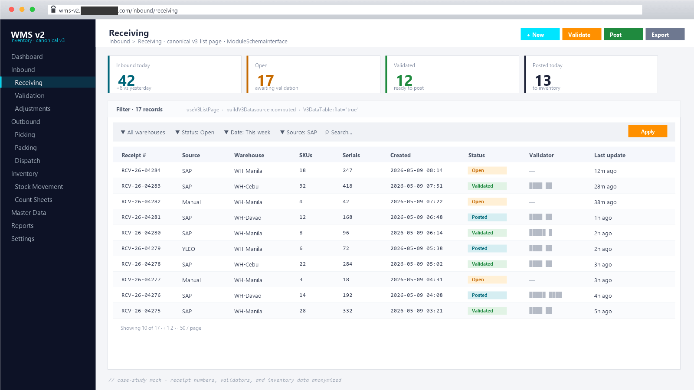

WMS v2 · Inventory Rewrite
Laravel 12 + Vue 3 rewrite of a legacy enterprise warehouse system
Active modernization of a multi-warehouse, multi-tenant inventory + WMS
platform — replacing a Laravel 8 / Nuxt 2 legacy with a Laravel 12 /
Vue 3 architecture organized around a single canonical V3 list-page
pattern (receiving.vue), a BaseCrudController +
BaseCrudService backend foundation, online schema migrations,
and CI-enforced quality gates.
What it is
A ground-up rewrite of an enterprise WMS that handles receiving, picking, packing, dispatch, validation, count-sheets, stock movement, and audit trails across multiple warehouses and tenants. The rewrite replaces a ~113-controller Laravel 8 backend and a ~130-page Nuxt 2 frontend with Laravel 12 + Vue 3, organized around one canonical pattern per layer — mirror that pattern, don’t reinvent.
Five binding requirements drive every decision: parity
(every legacy capability replicated), flexibility
(schema- and config-driven, not hardcoded), maintainability
(single canonical pattern), scalability (DB + API + FE
ready for 10× data without redesign), and performance
(fast first paint and page interaction at scale). Plus the operational
constraint that all migrations run online
(ALGORITHM=INPLACE, LOCK=NONE) and ship an EXPLAIN snapshot
in the docblock.
The bottleneck
The legacy WMS works — in production daily, handling real multi-warehouse traffic — but it’s carrying compounding cost:
- ~113 controllers on Laravel 8 with no shared CRUD foundation; every endpoint reinvents pagination, validation, filtering, audit logging.
- ~130 Vue 2 pages with at least three competing list-grid patterns; small UX changes ship inconsistently across modules.
- Vue 2 LTS ended; Nuxt 2 ended; PHP 7.x baseline limits backend options.
- Adding a new module requires touching ~15 files spread across the codebase; the “happy path” for a new feature isn’t codified anywhere.
- The team uses AI agents (Claude Code, Cursor) heavily, but the inconsistent patterns confuse the agents — each session produces slightly different code shapes.
- Data volumes have grown ~5× since the system shipped; some
reports scan the full table because they were written
->get()beforecursor()was an option.
The ask: same workflows, modern stack, one canonical pattern. A rewrite the team can both maintain by hand and let AI agents extend confidently — without breaking production during the transition.
How I broke it down
- One canonical list-page UI.
wms_v2/src/views/inbound/receiving.vueis the template every list view mirrors:<Layout>→div.v3-page.v3-view-inner→div.ph(header withph-left/ph-actions) →<WmsStatCards>→div.v3-cardcontainingdiv.toolbar+<WmsFilterPanel>+<V3DataTable :flat="true">. Driven byuseV3ListPage()+buildV3Datasource(). New module = copy this shape, don’t invent another one. BaseCrudController+BaseCrudService. Generic index / show / store / update / destroy + actions / bulk operations. Each module subclasses; cross-cutting behavior (audit logging, validation hooks, soft-delete handling) lives in the base. Direct audit writes are forbidden by a PHPStan rule.ModuleSchemaInterface. Each module declares itsmodulecode,rowKey,gridcolumns,formshape,filters,statCards,workflow, andenums— one interface, one place. The Vue side callsuseModuleSchema()to consume it.- Status workflow & permission registry.
StatusWorkflowandPermissionRegistry::permissionsFor()generate per-module board states + permission strings — no hand-curated permission constants drifting across modules. - Composables on the frontend.
useV3ListPage,useModuleSchema,useLookup,usePermissions— the page code reads as orchestration; the work happens in the composables. - CI guardrails encode the architecture. An ESLint
rule rejects inline
columnDefsinviews/*.vue; another rejects rawaxiosimports in views. A PHPStan rule rejects inlinewhere()chains in controllers (force them into services); another forbidsget()inside reports (requirecursor()). A migration linter requires every new index to ship with an EXPLAIN snapshot in the docblock and to useALGORITHM=INPLACE, LOCK=NONE. - Parity matrix as the rollout source-of-truth.
docs/parity/feature-matrix.mdlists every legacy capability with its v2 implementation status: planned / in-progress / shipped / verified. Rollout proceeds module by module behind a toggle; the legacy system remains the fallback until parity is verified. - Karpathy coding guidelines in the agent guide. The
CLAUDE.mdbundles Karpathy’s rules (think before coding, simplicity first, surgical changes, goal-driven execution) so the agent doesn’t over-refactor or speculatively abstract. Project rules win where they conflict. - Online schema migrations. Every new index is
additive and online (
ALGORITHM=INPLACE, LOCK=NONE); blocking migrations are reviewed manually and run during a defined window. - Playwright e2e per module. Separate
e2e/workspace with per-module artifact bucketing so a broken receiving test doesn’t hide a broken picking regression.
What I built
Foundation in place (Phase 0):
BaseCrudController+BaseCrudServicewith hooks; writeswms_audit_logsvia the service layer only.ModuleSchemaInterfacedefining the module/rowKey/grid/ form/filters/statCards/workflow/enums contract.StatusWorkflow,PermissionRegistrysupport classes.- Frontend composables:
useV3ListPage,useModuleSchema,useLookup,usePermissions. - Reusable Vue components:
V3DataTable(replaces legacyWmsAgGrid+useGridDefaults/buildDatasource, removed 2026-05-09),WmsFilterPanel,WmsStatCards,WmsWorkflowButtons,WmsForm,WmsFormField. buildV3Datasource()utility — returns acomputed(not a method) that feedsV3DataTable’s datasource prop with{page, perPage, sort, filters} => {rows, total}.
Modules in the rewrite (each follows the canonical pattern):
- Inbound · Receiving —
AppReceiving,AppReceivingItem,AppReceivingSerial; SAP-bridged document ingestion; canonical view for the entire rewrite. - Validation —
AppValidator,AppValidatorItem,AppValidatorPallet,AppValidatorSerial. - Adjustments —
Adjustment,AdjustmentDetail; gated by approver workflow. - Bookings & charges —
Booking,BookingDetail,ChargeHeader,ChargeDetail,ChargesGroup. - Master data —
Brand,Company,Account,BoxSeries,Attachment. - Audit trail —
AuditLogwrites exclusively throughBaseCrudService; no directcreate()calls allowed (PHPStan rule enforces).
The canonical receiving view — the template every list page mirrors:
<template> <Layout> <div class="v3-page v3-view-inner"> <div class="ph"> <div class="ph-left">{{ title }}</div> <div class="ph-actions"><WmsWorkflowButtons :workflow="schema.workflow"/></div> </div> <WmsStatCards :cards="schema.statCards" :summary="summary" /> <div class="v3-card"> <div class="toolbar"></div> <WmsFilterPanel :filters="schema.filters" v-model:value="filters" /> <V3DataTable :flat="true" :columns="schema.grid" :datasource="datasource" :permissions="perms" /> </div> </div> </Layout> </template> <script setup> const schema = useModuleSchema('receiving') const { rows, total, filters, summary } = useV3ListPage(schema) const datasource = computed(() => buildV3Datasource({ module: 'receiving', filters })) const perms = usePermissions('receiving') </script>
That’s the entire shape for a new module: a schema, a list page, a datasource. The work happens in the composables and the backend; the view stays declarative.

ph header with workflow actions, four stat cards (Inbound today / Open / Validated / Posted), filter panel, and the V3DataTable showing anonymized receiving records. Inventory volumes illustrative.Tech
- Backend: Laravel 12 (PHP 8.2+), MySQL, Eloquent, Sanctum, Spatie Laravel-Permission, DomPDF, maatwebsite/excel, Carbon, Telescope, Pint, PHPStan. ~103 Eloquent models, ~76 controllers, ~121 migrations.
- Frontend: Vue 3 on Vue CLI (not Vite — rollout
constraint), AG Grid Enterprise inside
V3DataTable, Vue Router, Vuex modules, ESLint with project-specific rules (wms/no-inline-grid-columns,wms/no-axios-in-views). ~130 Vue pages. - Testing: PHPUnit on the API; Playwright in a separate
e2e/workspace with per-module artifact bucketing. - CI guardrails: ESLint + PHPStan rules encode the architecture; a migration linter validates online DDL + EXPLAIN snapshots; pre-commit hooks block drift.
- Companion knowledge base: the LLM-friendly wiki with frontmatter-tagged pages covering every controller, model, table, module, and workflow. Updated in the same commit as code changes.
- Tooling: VS Code · Claude Code · Git · Composer · npm.
Results
A new module on v2 now takes a fraction of the time the legacy code
required — the agent (human or AI) reads the canonical
receiving.vue + ReceivingController +
ReceivingService, copies the shape, points the schema at a new
table. The CI guardrails catch “helpful” inline column
defs or raw axios calls before they hit the repo. Migrations ship online,
so the team can extend schema during business hours without windows.
Parity rollout is module-by-module behind a toggle; the legacy system remains the fallback per module until v2 verification ticks the parity matrix to verified. Specific rollout dates and business figures stay with the client; happy to discuss specifics on request.
What I’d do again — and differently
Worked well:
- One canonical pattern, mirrored everywhere. The single biggest wins for both human and AI productivity. New modules don’t need design; they need wiring.
- CI rules that encode the architecture. ESLint and PHPStan rules turn architectural intent into mechanical checks — agents stop accidentally re-introducing the patterns the rewrite exists to remove.
- Parity matrix over a big-bang cutover. Module-by-module rollout with a fallback toggle let production keep running while v2 caught up.
- Online migrations only.
ALGORITHM=INPLACE, LOCK=NONE+ EXPLAIN snapshots removed the “wait for the maintenance window” bottleneck and gave us schema agility. - Bundling Karpathy coding guidelines into the agent guide. Reduced the “LLM speculatively abstracts” failure mode that cost us hours of cleanup in the legacy codebase.
Would tighten:
- Move from Vue CLI to Vite earlier. Compatibility with the rollout strategy pinned us to Vue CLI for now; future projects (and the late phases of this one) target Vite for the rebuild speed at scale.
- Schema-driven forms before list grids. We invested in
the V3 list pattern first; if we’d landed
ModuleSchemaInterface-driven forms (WmsForm+WmsFormField) at the same time, the per-module ship cost would have dropped further. - Audit-log query patterns earlier. The
wms_audit_logstable is exhaustive; we needed targeted indexes + cursor-based exports earlier than we shipped them. - Per-module e2e templates. The Playwright workspace is well-bucketed but the “copy this test, change these selectors” template wasn’t documented until module 5; documenting it before module 1 would’ve made test coverage more uniform.